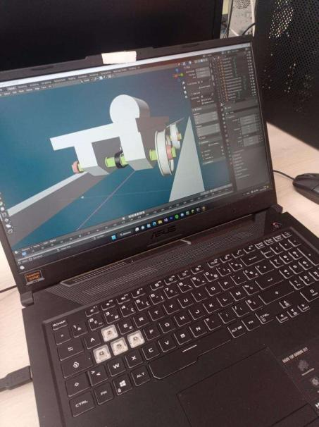
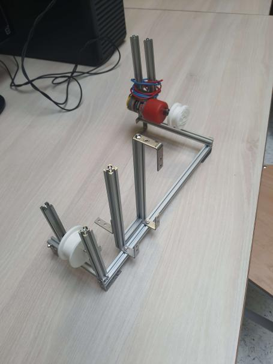

Qu'est-ce que la spécialité SI ?
Les Sciences de l'Ingénieur c'est l'étude de la mécanique et de l'électricité, qui peuvent servir dans les études supérieur ainsi que dans la vie de tous les jours afin de comprendre ou réparer un objet. Celle-ci permet aux élèves de maitriser les bases de la mécanique et de l'électricité.

Que fait-on en SI ?
En SI, vous allez apprendre :
- Des formules électriques et mécaniques.
- Le fonctionnement de certains objets plus ou moins communs dans la vie de tous les jours.
- Le travail de groupe afin de réaliser des projets, comme la fabrication et la présentation d'un système.

Pourquoi choisir cette spécialité ?
Choisir la spécialité SI permet de mettre en place un travail rigoureux, car un certain travail personnel est requis dans cette spécialite, et cela permet aussi d'apprendre à travailler efficacement en groupe, ce qui permet d'obtenir des compétence de gestion de groupe qui seront utiles dans le monde du travail, de comprendre le fonctionnement d'objet du quotidien. Les diplômés peuvent trouver un emploi dans de nombreux domaines.

Quelles sont les possibles débouchés après le BAC ?
Après un bac de SI, il est possible de faire une prépa dans un lycée ou dans une école d'ingenieur ou d'architecture, de faire une license dans une Universitée, ou bien de faire un BTS ingénieur ou physique.
Quels métiers avec la SI ?
Comme le nom de la spécialité l'indique, on se dirige généralement vers un métier d'ingénieur avec cette spécialité. Mais on peut également devenir architecte, designer ou développeur.